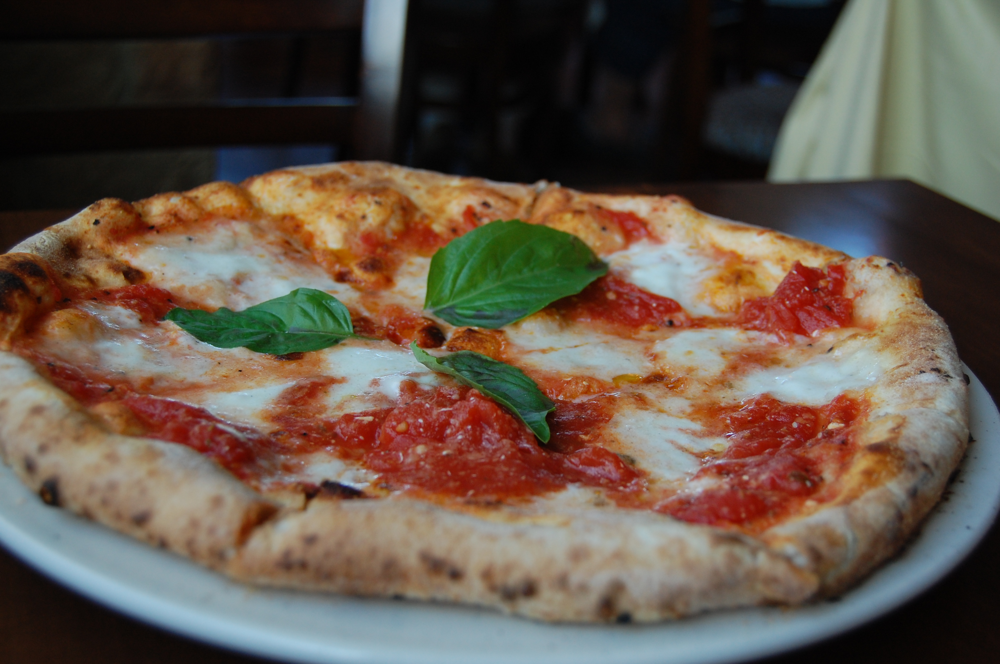

How to make pizza!

Pizza is a dish that derives from Italy and is well-know all over the
world
There are many varieties of pizzas, below you will find the recipe for the
original pizza, which is called Margherita
Ingredients for a classic Margherita:
For the dough
- 500g of wheat flour
- 300ml of warm Water
- Pinch of salt
- 1 tsp of olive oil
- 10g of fresh yeast
For the topping
- Tomato sauce
- Fresh mozzarella cheese
- Fresh basil
- Olive Oil
- Salt
Steps:
- Prepare the dough by mixing all the ingredients to form a dough
- Let the dough rest for about 30 minutes
- Preheat the oven to 250 degrees Celsius
-
For the topping, mix the tomato sauce in a bowl with 1tbsp of olive oil
and a pinch of salt
- Tear the mozzarella into smaller pieces
-
After the dough has rested, make the pizza form and add the sauce on top
- Distribute the mozzarella all over the pizza
-
Bake the pizza in the oven for about 10-12 minutes, until the crust is
golden
-
Once baked, top the pizza generously with fresh basil with a drizzle of
olive oil